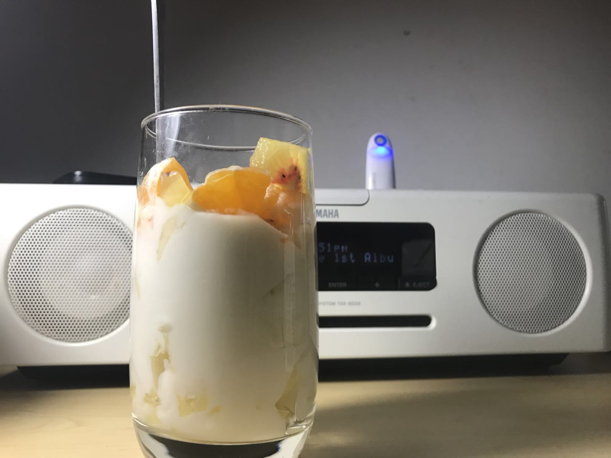
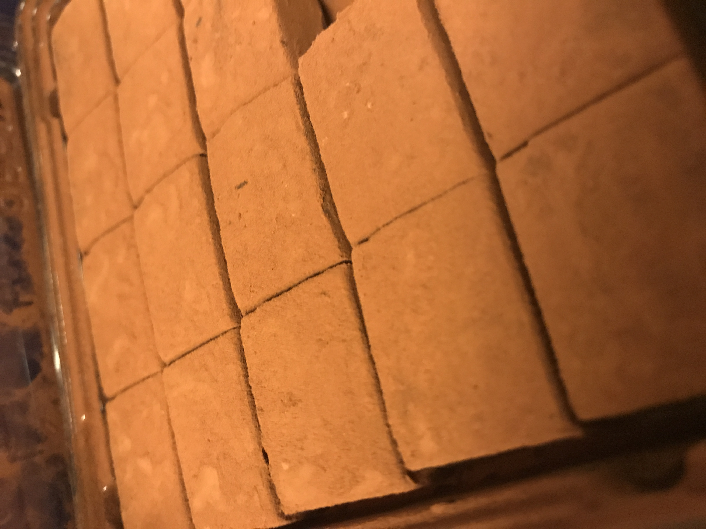

一九二七年出生的杨秉彝先生于一九四八年来到了台湾，在一九五八年创建了鼎泰丰，自一九七三年聘请了上海师傅制作出了第一个小笼包，便开始了鼎泰丰小笼包秉承传统、止于至善的历程…… 前台湾观光协会会长、亚都饭店总裁严长寿先生在给黄鸿湖先生所著的《典范鼎泰丰》序言中这样说着鼎泰丰：
“每当国际友人来台，第一个向我问起的，不是故宫，也不是阿里山，而是以小笼包驰名的“鼎泰丰”。鼎泰丰有能力将源自中国中原的餐点，经过现代化管理及精致的包装，发扬到世界乃至于回到大陆，不愧是中华文化创意产业的典范。
“虽然对鼎泰丰的大名久仰，也经常把鼎泰丰介绍给来此采访的美食国际记者，但直到一九九一年，台湾第一次举办国际旅游会议，我以地主的身份向国际参展人士推荐台北最具代表性数家餐厅时，才真正认识鼎泰丰老板杨纪华先生。之后每次邀请鼎泰丰参加还未推广观光活动，杨老板总是非常热心参与，这些接触也让我领略到杨老板的严谨与细心。每次出访，不论预算多么有限，餐厅业务多么繁忙，鼎泰丰一定坚持派出五人团队；原因无他，只因为杨老板对小笼包制作过程一丝不苟的要求。正式这样用心经营，再转以现代化的品管观念，才使得鼎泰丰得以赢得口碑，迈向国际。
“在观光餐饮界多年，每每被人问起如何向国际行销台湾，我总是说：‘一味学习国际语汇，以便与国际沟通、接轨，不如从更为根本的人性共通处、从我们本身已具有的丰厚资产为起点开始下工夫。’饮食艺术一如舞蹈、音乐、绘画等艺术，早已是国际上的共通语言。从一间小小的油行，准入传统饮食经营，本着家乡口味的传承与制作品质的坚持，鼎泰丰的故事也验证了
前文化局长龙应台说的话：‘从传统开出现代，从台湾走向国际。’
“看到一个个浑圆饱满的小笼包出炉，听到每一位用餐客人满足的赞叹，您一定就会赞同杨老板“看到一个个浑圆饱满的小笼包出炉，听到每一位用餐客人满足的赞叹，您一定就会赞同杨老板坚持到底的经营理念，也会为他同感骄傲与欣慰。”

Share
Distinction
o
Three Stars • Exceptional cuisine, worth a special journey
Classification
õ
Top class comfortable. Our most delightful places
Price
$$
Between 200 and 350 MOP
MICHELIN Guide’s Point Of View
The lavish interior uses the traditional Chinese elements of the goldfish and the number eight to ensure good fortune for all who dine here. The cuisine is a mix of Cantonese and Huaiyang, but the kitchen also adds its own innovative touches to some dishes. Specialities include steamed crab claw with ginger and Chinese wine, and stir-fried lobster with egg, minced pork and black bean. At lunchtime, over 40 kinds of dim sum are served.
Services
N Notable wine list a Wheelchair accessible { Private dining rooms K Valet parking